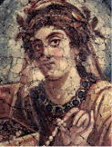
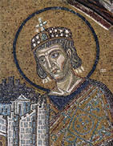
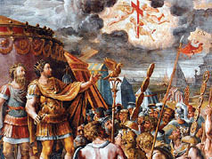
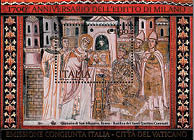

İlk Hıristiyan Hükümdar, İlk Konstantin
Avrupa, Asya ve Afrika’ya yayılan sınırlarıyla dünyanın gelmiş geçmiş en geniş emperyal devletine hükmeden Birinci Konstantin, Birleşik Roma’nın sonuncu büyük imparatoruydu. 272 yılında doğdu, 337’de öldü ve tüm hasımlarını tek tek yenip oturduğu Roma tahtında, tam 31 yıl hüküm sürdü.
Tarihin sadece en büyük değil, en uzun ömürlü devleti Roma egemenliği, önce krallık, ardından cumhuriyet olarak yapılandı, sonunda da imparatorluğa dönüştü. Ancak devletin hem cumhuriyetçi geleneği hem de genişliği, Roma’nın çoğu zaman birden çok sezar3 tarafından yönetilmesini gerektirdi. Bu sezarlardan birine “Augustus Cesarius”, yani “Yüce Sezar” ünvanı verilir ve ötekilerin üstündeki otorite sayılırdı.

Büyük Konstantin (272-337)

Büyük Konstantin, Nova Roma’nın
şehir planını Meryem’e sunarken
(Ayasofya/mozaik,
1000 yılına doğru)
Birinci Konstantin, komutasındaki ordu tarafından 306 yılında ölen babası yerine “Augustus Cesarius” ilan edildiğinde, Roma İmparatorluğu dört ortaklı bir koalisyon hükümeti tarafından yönetiliyordu. Her sezarın bir bölgesi ve ordusu vardı. Aralarında iktidar mücadelesi başladı, koalisyon çöktü. 312 yılında Galya, Bretanya ve İspanya ordularının başında Alp Dağları’nı aşıp imparatorluk başkenti Roma’ya yürüyen Birinci Konstantin, başlıca hasmı Maxentius’u öldürüp ordusunu ezdi.
Rakiplerini bir bir yenerek imparatorluğu tek elde topladıktan sonra tarihin “Büyük Konstantin” diye anacağı Roma fatihi, Milvio Köprüsü Savaşı’ndan öteye Hıristiyan olduğunu ilan etti ve devletin Hıristiyanlara uyguladığı yıldırma politikasına son verdi.
O çağlarda “dünya” demek olan Roma İmparatorluğu’yla birlikte tarihin akışını değiştirecek bu gelişme, iki farklı anlatımla efsaneleşti.
Bir anlatıma göre, Konstantin ile hasmı Maxentius’ın orduları ilk kez Roma’ya on kilometre mesafedeki Saxa Rubra4 alanında karşı karşıya geldi. İşte bu çatışma sırasında, gökyüzünde Konstantin ve ordusunu şaşkınlığa düşüren bir işaret belirdi. Güneşin tepesinde dev bir haç göründü. Muharebeden Haçın üzerinde, In hoc signo vinces (Bu işaretle yeneceksin) yazıyordu.
Öteki anlatıma göre ise Konstantin, muhabereden önceki gece, bir rüya gördü. Rüyasında, bütün askerleri üzerinde çengelli çarpı işareti olan kalkanlarla savaşa giriyordu. İmparator, ertesi sabah uyanır uyanmaz ilk iş, askerlerine kalkanlarının üstüne çengelli çarpı işareti koymalarını emretti. Söz konusu çengelli çarpı, X diye yazılan kh ile P diye yazılan rho harflerinin üst üste gelmesi, yani İsa’nın Yunancası “Khristos”un ilk iki harfiydi.
Zaten sadeleştirilmiş Haç sembolü de hem İsa’nın gerildiği haç, hem de adının ilk harfi Yunanca X’in dik açılı halidir...
Efsanedeki doğruluk payı ne olursa olsun, sonuç o ki, yepyeni bir kutsallıkla kuşanan Büyük Konstantin ve ordusu, 28 Ekim 312’de Saxa Rubra’dan sürdüğü Maxentius’un ordusunu Milvio Köprüsü’nde sıkıştırıp ezmişti.

Ressam: Jules Romain/ 1520-24
Mutlak gerçek, Birinci Konstantin’in ileri görüşüydü. İmparator, Roma nüfusunun henüz onda birinin iman ettiği Hıristiyanlık dininin özellikle kentlerde şaşırtıcı bir hızla yayıldığını saptamıştı. Kendisinden önceki sezarların baskı ve taciz politikasının tam tersine, imparatorluğu bu yeni dinin çatısı altında birleştirebileceğini düşündü. 313 yılında “Milano Fermanı” diye anılan hoşgörü sözleşmesiyle Hıristiyanların sevgisini ve desteğini kazandı.

Milano Fermanı’nın 1700. yıldönümü için çıkartılan İtalyan posta pulu
Hıristiyanlığı kabul ettikten sonraki ilk kutsal yatırımlarını, İtalik Yarımadası’ndaki Roma’ya yaptı. Tek tanrıya hidayetinin başında, çoğul tanrılara tapan Roma’yı bir Hıristiyan yerleşkesine dönüştürmeye kararlıydı.
Ölümünden beş yüzyıl sonraki sahte vasiyetinde sıralanacak olan San Paulo, San Sebastiano, Santi Aposti dei Christo (Aziz Havariler) ve en görkemlisi de Papalığın birincil simgesi, Hazreti İsa’nın en yakın havarisi, Papaların atası kabul edilen Aziz Petrus’un Vatikan tepesine gömüldüğü efsanesini yayacak olan San Pietro bazilikalarını inşa ettirdi.
Otuz bir yıllık hükümdarlığı sırasında gerçekleştirdiği muazzam işler ve kurduğu kentlerle tarihe “kurucu” olarak geçen Büyük Konstantin, pagan Roma’yı Hıristiyanlığın Kudüs’ten sonraki kutsal merkezi yapmak istedi, evet. Ama eski başkenti asla sevmedi, benimsemedi, Roma’ya ancak zorunlu olduğunda gelip gidiyordu. Aklı fikri Doğu’daydı. Gönlü Doğu’yu çekiyor, gözü Doğu’ya kayıyordu.
3 Almanca Kaiser, Rusça Çar, Macarca Çasar, Osmanlıca Kaysar ya da Kayser ve Tibetçe Gesar sözcükleri, Yunanca Caesar yazılan Sezar’ın türevleridir. Bugün Türkiye’deki Kayseri ili, kaysar sözcüğünden gelen adını, MÖ 20 ile 16 yılları arasındaki Ermenistan fethi sırasında kenti 300 yıl süreyle Roma’ya bağlı bir eyalet haline getiren İmparator Tiberius zamanında almıştır.
4 (Lat.) Kızıl kayalar.